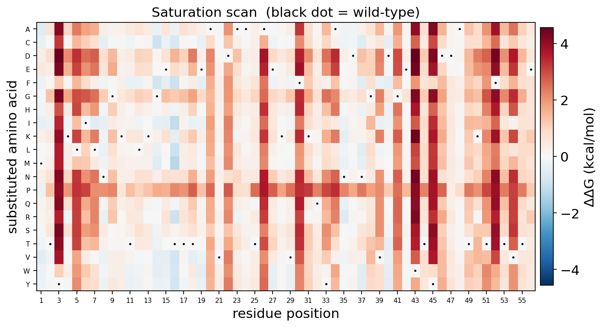
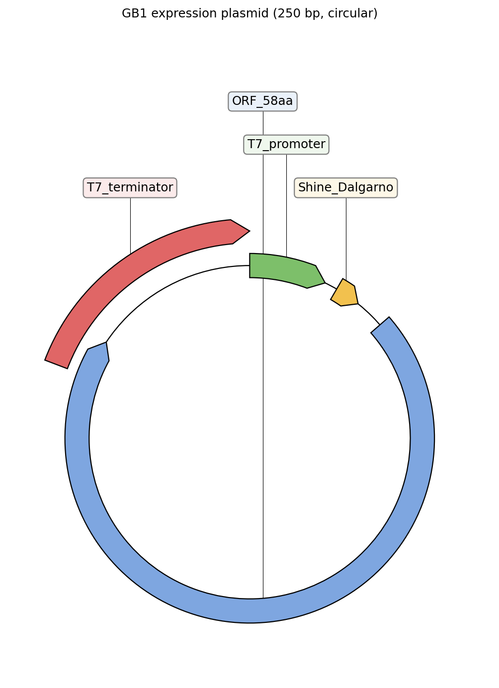
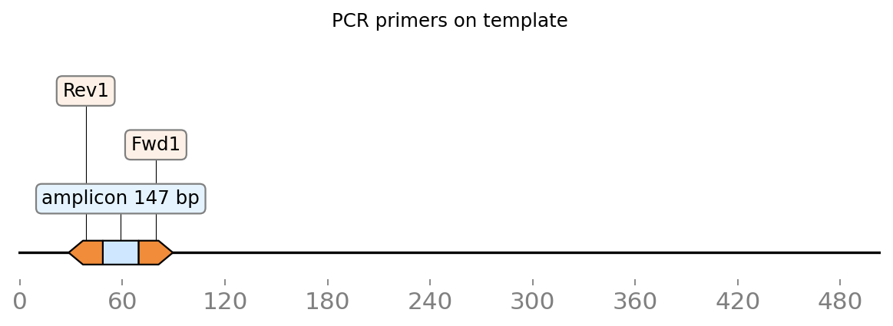
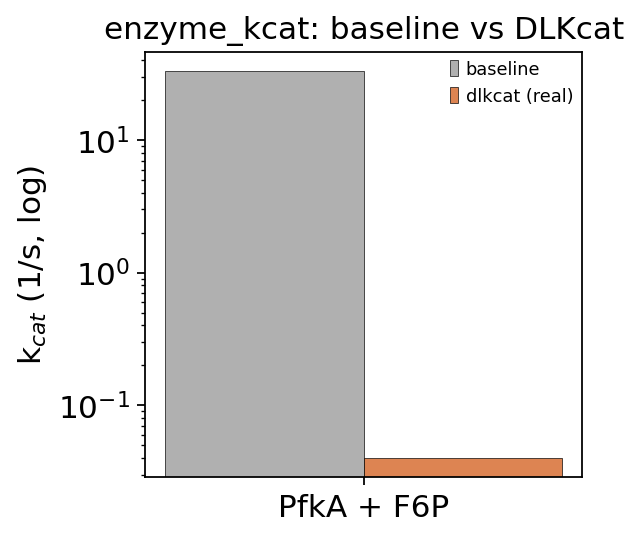
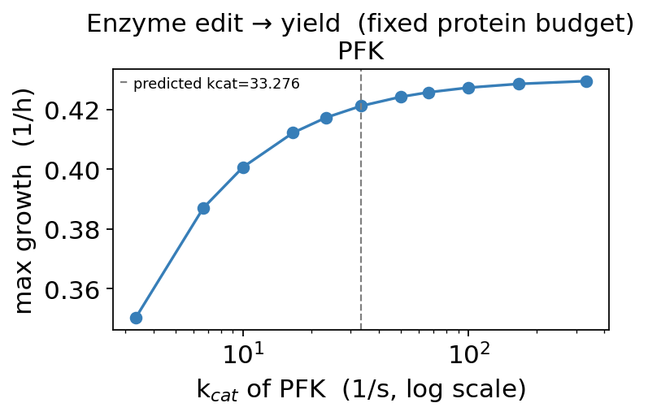

Synthetic biology with ov.synbio — from metabolism to enzyme to DNA#
This tutorial introduces omicverse.synbio, a self-contained three-layer design stack for synthetic biology: metabolic networks (A), protein / enzyme design (B), and DNA (C). Unlike a metabolism-only or a protein-only toolkit, the layers are wired together — the signature move is the A↔B hinge: predict a turnover number from an enzyme’s sequence, push it into a genome-scale metabolic model as an enzyme-capacity constraint, and re-solve the achievable yield.
Everything below runs on real data: the e_coli_core genome-scale model from BiGG, the 56-residue immunoglobulin-binding protein G B1 domain (GB1), and the real E. coli phosphofructokinase (PfkA) enzyme.
By the end you will understand:
How to load a genome-scale metabolic model (GEM), run FBA, propose strain-design targets, and read a production envelope
How the protein layer folds a sequence with ESMFold (and renders it in interactive 3D), embeds it with ESM-2, scores every point mutation with a zero-shot ESM saturation scan (visualised as a deep-mutational-scan heatmap), redesigns a backbone with ProteinMPNN, and scores thermostability ΔΔG
How to codon-optimize a gene for a host and design PCR primers
The moat — how
enzyme_kcat → ec_model → fbaturns an enzyme edit into a recomputed metabolic yield, plotted as a k_cat→yield curve
The protein layer uses a GPU automatically when one is available. Install with pip install 'omicverse[synbio]'.
0 — Setup#
We only import omicverse — every synbio function is accessed through ov.synbio.*, so the notebook stays terse and the API is discoverable via tab-completion on ov.synbio. Plotting helpers live in the package too (ov.synbio.plot_*, ov.synbio.view_structure), so each figure is a single call.
import omicverse as ov
ov.plot_set()
print('omicverse', ov.__version__)
🔬 Starting plot initialization...
🧬 Detecting GPU devices…
✅ NVIDIA CUDA GPUs detected: 1
• [CUDA 0] NVIDIA H100 80GB HBM3
Memory: 79.1 GB | Compute: 9.0
____ _ _ __
/ __ \____ ___ (_)___| | / /__ _____________
/ / / / __ `__ \/ / ___/ | / / _ \/ ___/ ___/ _ \
/ /_/ / / / / / / / /__ | |/ / __/ / (__ ) __/
\____/_/ /_/ /_/_/\___/ |___/\___/_/ /____/\___/
🔖 Version: 2.2.1rc1 📚 Tutorials: https://omicverse.readthedocs.io/
✅ plot_set complete.
omicverse 2.2.1rc1
The whole module is registered under the synthetic_biology category. ov.find_function does fuzzy search across Chinese + English aliases — this is how the omicOS agent kernel discovers synbio tools.
ov.find_function('代谢模型') # -> ov.synbio.load_gem
🔍 Found 4 matching function(s):
1. 📦 omicverse.synbio._gem.load_gem
📝 加载基因组尺度代谢模型 (GEM):本地 SBML 文件或 BiGG 模型 id (如 e_coli_core / iML1515) → cobra.Model。Load a genome-scale metabolic model from an SBML path or BiGG id.
🏷️ Aliases: load_gem, 代谢模型, 基因组尺度代谢模型, 读取GEM, read_sbml, cobra_model, genome_scale_model
📁 Category: synthetic_biology
2. 📦 omicverse.synbio._ec.ec_model
📝 酶约束代谢模型 (GECKO / sMOMENT):把 kcat + 酶分子量转成蛋白质量预算约束。method='gecko'(默认)约束全酶促反应组(改一个酶的 kcat 会在共享蛋白预算里重新分配,物理正确);method='pool' 只约束给定反应。Enzyme-constrained model (sMOMENT/GECKO): full-proteome or targeted.
🏷️ Aliases: ec_model, 酶约束模型, 酶约束代谢模型, enzyme_constrained_model, GECKO, ecModel, 酶约束
📁 Category: synthetic_biology
3. 📦 omicverse.single._metabolism.Metabolism
📝 Single-cell metabolism inference. Wraps scMetabolism (pathway activity), Compass (constraint-based reaction flux) and scFEA (graph-neural-network module flux) behind a unified method= API; results land in adata.obsm['X_metabolism'] / adata.uns['metabolism'].
🏷️ Aliases: 代谢, metabolism, scMetabolism, 代谢活性, 代谢通量, metabolic_flux, metabolic_pathway, compass, scfea
📁 Category: single
4. 📦 omicverse.synbio._ec.ec_model[method=gecko]
📝 Variant of `omicverse.synbio._ec.ec_model` when `method='gecko'`.
🏷️ Aliases: gecko, ec_model gecko, method gecko, 酶约束模型 gecko, 酶约束代谢模型 gecko, enzyme_constrained_model gecko, GECKO gecko, ecModel gecko, 酶约束 gecko
📁 Category: synthetic_biology
<function omicverse.synbio._gem.load_gem(path_or_id: 'str', cache_dir: 'Optional[str]' = None) -> "'cobra.Model'">
1 — Layer A: genome-scale metabolic models#
load_gem accepts a local SBML file or a BiGG identifier. e_coli_core is the classic 95-reaction core-metabolism model of E. coli — small enough to be instant, real enough to be meaningful. The currency of this layer is a cobra.Model; nothing here touches AnnData.
m = ov.synbio.load_gem('e_coli_core')
print(m.id, '|', len(m.reactions), 'reactions,', len(m.genes), 'genes')
e_coli_core | 95 reactions, 137 genes
Flux Balance Analysis (FBA) maximizes the biomass reaction subject to the stoichiometric and steady-state constraints. On glucose minimal medium the model predicts a growth rate of ~0.87 h⁻¹ — the canonical answer for e_coli_core.
sol = ov.synbio.fba(m)
print('max growth =', round(sol.objective_value, 4), '/h')
max growth = 0.8739 /h
1.1 — Strain design and the production envelope#
strain_design ranks engineering targets for over-producing a metabolite. Two dependency-free engines run together: FSEOF (Flux Scanning based on Enforced Objective Flux) finds amplification targets — reactions whose flux must rise as production is enforced — and a growth-coupled knockout scan finds deletion targets. Here we target succinate (EX_succ_e).
res = ov.synbio.strain_design(m, 'EX_succ_e')
print('amplify (FSEOF):', list(res.amplify['reaction'].head(5)))
res.amplify.head()
amplify (FSEOF): ['SUCCt3', 'EX_h_e', 'FRD7', 'FUM', 'PPC']
| reaction | slope | l0 | l1 | |
|---|---|---|---|---|
| 0 | SUCCt3 | 1.000000 | 1.638417 | 14.745750 |
| 1 | EX_h_e | 0.931367 | 19.092127 | 31.287555 |
| 2 | FRD7 | 0.905043 | 0.000000 | 10.852285 |
| 3 | FUM | 0.727314 | 3.312901 | 10.852285 |
| 4 | PPC | 0.472126 | 3.897654 | 11.108854 |
Compare algorithms (side by side). method='fseof' (above) is a fast, dependency-free heuristic that ranks over-expression targets. method='optknock' runs the exact bilevel MILP OptKnock (via the StrainDesign package) — the rigorous method for concrete knockout designs.
# same target, two strain-design algorithms — side by side
fseof = ov.synbio.strain_design(m, 'EX_succ_e', method='fseof')
oknock = ov.synbio.strain_design(m, 'EX_succ_e', method='optknock', max_knockouts=2, time_limit=90)
print("COMPARISON — succinate over-production design")
print(" method='fseof' (heuristic) amplify targets:", list(fseof.amplify['reaction'].head(3)))
print(" method='optknock' (exact StrainDesign MILP) knockout designs:")
print(oknock.knockout.head(3).to_string(index=False))
COMPARISON — succinate over-production design
method='fseof' (heuristic) amplify targets: ['SUCCt3', 'EX_h_e', 'FRD7']
method='optknock' (exact StrainDesign MILP) knockout designs:
knockouts n_knockouts
[ICDHyr] 1
[GLNS] 1
[PIt2r] 1
The top amplification targets — FRD7 (fumarate reductase), FUM (fumarase), PPC (PEP carboxylase) — are exactly the enzymes a metabolic engineer would over-express to push carbon toward succinate.
The production envelope makes the growth–production trade-off explicit: for acetate (EX_ac_e), the feasible growth rate shrinks as we force more product secretion — the fundamental tension every strain design must navigate.
ov.synbio.plot_production_envelope(m, 'EX_ac_e')
None
{kind=link}
2 — Layer B: protein & enzyme design (GPU)#
The protein layer is built on public state-of-the-art open models — ESM-2 / ESM-1v / ESMFold and ProteinMPNN. Each function prints the device it actually used, so you can confirm the GPU is engaged. Our test protein is the 56-residue GB1 domain — a small, well-folded natural protein.
GB1 = 'MTYKLILNGKTLKGETTTEAVDAATAEKVFKQYANDNGVDGEWTYDDATKTFTVTE'
len(GB1)
56
2.1 — ESM-2 embeddings#
protein_embed returns a fixed-length vector per sequence (mean-pooled residue representations from ESM-2). These feed any downstream model — property regressors, clustering, function transfer.
X = ov.synbio.protein_embed([GB1], model='esm2_t33_650M')
X.shape # (1, 1280)
[ov.synbio.protein_embed] model=esm2_t33_650M device=cuda (NVIDIA H100 80GB HBM3, 79 GB)
(1, 1280)
2.2 — Zero-shot variant effect (in-silico directed evolution)#
variant_effect scores substitutions with an ESM language model — no labels needed. With mutations=None it runs a full saturation scan (every position × 19 alternatives): a computational deep-mutational-scan. A positive score means the model prefers the mutant.
dms = ov.synbio.variant_effect(GB1, model='esm1v')
print('scored', len(dms), 'substitutions')
dms.head() # most-favoured substitutions first
[ov.synbio.variant_effect] model=esm1v scoring=masked-marginals device=cuda (NVIDIA H100 80GB HBM3, 79 GB)
scored 1064 substitutions
| mutation | wt | pos | mut | score | |
|---|---|---|---|---|---|
| 0 | F30A | F | 30 | A | 2.283173 |
| 1 | V21A | V | 21 | A | 2.167181 |
| 2 | V21K | V | 21 | K | 2.088095 |
| 3 | W43V | W | 43 | V | 2.042460 |
| 4 | K13D | K | 13 | D | 2.005156 |
plot_variant_effect renders the whole scan as a deep-mutational-scan heatmap (position × amino acid). Blue columns are conserved (few tolerated substitutions); red cells are substitutions the model favours. Black dots mark the wild-type residue at each position.
ov.synbio.plot_variant_effect(dms)
None
{kind=link}
2.3 — Structure prediction with ESMFold#
predict_structure folds a single sequence into 3D coordinates with ESMFold (no MSA). It requires a GPU by default. The mean pLDDT (0–100) reports model confidence — GB1 is a well-behaved domain and scores high.
pred = ov.synbio.predict_structure(GB1, out_path='gb1.pdb')
print('mean pLDDT =', round(pred.mean_plddt, 1), '| device =', pred.device)
[ov.synbio.predict_structure] device=cuda (NVIDIA H100 80GB HBM3, 79 GB) len=56
[ov.synbio.predict_structure] done: mean pLDDT=89.0
mean pLDDT = 89.0 | device = cuda
view_structure renders it as an interactive 3D cartoon (py3Dmol), coloured by pLDDT confidence bands (blue = very high, orange = low). Drag to rotate; the view persists in the exported HTML docs.
ov.synbio.view_structure(pred)
3Dmol.js failed to load for some reason. Please check your browser console for error messages.
<py3Dmol.view at 0x7f1110eb3ca0>
2.4 — Inverse design (ProteinMPNN) and thermostability ΔΔG#
Given the backbone we just folded, inverse_design (ProteinMPNN) samples new sequences predicted to adopt the same fold — the inverse problem of folding. A lower ProteinMPNN score is more confident; good designs beat the native sequence’s score.
designs = ov.synbio.inverse_design('gb1.pdb', num_sequences=4)
print('native score:', round(designs[0].score, 3),
'| best design score:', round(designs[1].score, 3))
[ov.synbio.inverse_design] method=proteinmpnn backbone=gb1.pdb device=cuda (NVIDIA H100 80GB HBM3, 79 GB) n=4
native score: 1.344 | best design score: 0.859
stability_ddg estimates how a point mutation changes fold stability, using the ProteinMPNN log-likelihood ΔΔG proxy (a positive value = predicted destabilizing).
ddg = ov.synbio.stability_ddg('gb1.pdb', mutations=['T2V', 'K4E', 'L5A'])
ddg
[ov.synbio.stability_ddg] pdb=gb1.pdb method=proteinmpnn device=cuda (NVIDIA H100 80GB HBM3, 79 GB)
| mutation | wt | pos | mut | ddg_proxy | |
|---|---|---|---|---|---|
| 0 | L5A | L | 5 | A | 5.038882 |
| 1 | K4E | K | 4 | E | 1.367056 |
| 2 | T2V | T | 2 | V | 1.047549 |
Compare algorithms. The default method='proteinmpnn' is a zero-shot log-likelihood ΔΔG proxy (no training labels). method='thermompnn' runs the real ThermoMPNN model (Dieckhaus 2024) — a stability head trained on the mega-scale dataset — giving calibrated ΔΔG in kcal/mol (positive = destabilising). ThermoMPNN is auto-cloned on first use.
cmp = ov.synbio.stability_ddg('gb1.pdb', mutations=['T2V','K4E','L5A'], method='thermompnn')
print('ThermoMPNN (real, trained) ΔΔG kcal/mol:')
cmp
[ov.synbio.stability_ddg] pdb=gb1.pdb method=thermompnn device=cuda (NVIDIA H100 80GB HBM3, 79 GB)
ThermoMPNN (real, trained) ΔΔG kcal/mol:
| mutation | wt | pos | mut | ddg | |
|---|---|---|---|---|---|
| 0 | L5A | L | 5 | A | 2.379662 |
| 1 | K4E | K | 4 | E | 1.627585 |
| 2 | T2V | T | 2 | V | -0.224619 |
Run the full ThermoMPNN saturation scan and view it as a ΔΔG heatmap — the same plot_variant_effect helper, now on calibrated kcal/mol values. Red = destabilising, blue = stabilising; buried positions light up as intolerant columns.
ssm = ov.synbio.stability_ddg('gb1.pdb', method='thermompnn') # full saturation scan
ov.synbio.plot_variant_effect(ssm) # real ΔΔG landscape (kcal/mol)
None
[ov.synbio.stability_ddg] pdb=gb1.pdb method=thermompnn device=cuda (NVIDIA H100 80GB HBM3, 79 GB)
{kind=link}

3 — Layer C: DNA design#
To actually build a protein you need a gene. codon_optimize rewrites a sequence for a host’s codon usage while respecting GC bounds and removing unwanted restriction sites (DNAchisel). design_primers then designs validated PCR primer pairs (primer3).
opt = ov.synbio.codon_optimize(GB1, host='e_coli')
print(opt)
# wrap the codon-optimised gene in a T7 expression cassette and view it as a plasmid map
cassette = ('TAATACGACTCACTATAGG' + 'AAAGGAGGACAACAT' + opt.sequence
+ 'CTAGCATAACCCCTTGGGGCCTCTAAACGGGTCTTGAGGGGTTTTTTG')
ov.synbio.view_construct(cassette, circular=True, title='GB1 expression plasmid')
None
CodonResult(host='e_coli', len=168, edits=36, GC=0.51, constraints_ok=True)
{kind=link}

# design PCR primers and draw them as binding arrows on the template (amplicon highlighted)
primers = ov.synbio.design_primers(opt.sequence * 3) # tripled so a product fits
print('cloning primers:', primers[0])
ov.synbio.view_primers(opt.sequence * 3, primers[0])
None
cloning primers: PrimerPair(product=147bp, Tm=60.0/60.1, L=CGACCGCGGAAAAAGTGTTT, R=TGGTTTCGCCTTTCAGGGTT)
{kind=link}

4 — The moat: A↔B coupling#
Here is the feature a metabolism-only or protein-only tool can’t offer: edit an enzyme, and the metabolic network re-solves its yield.
We start from the real E. coli phosphofructokinase (PfkA) sequence and its physiological substrate fructose-6-phosphate. enzyme_kcat predicts a turnover number k_cat; ec_model turns {reaction: k_cat} into an enzyme-capacity constraint (a lightweight GECKO); fba re-solves growth under that constraint.
PFKA = ('MIKKIGVLTSGGDAPGMNAAIRGVVRSALTEGLEVMGIYDGYLGLYEDRMVQLDRYSVSDMINRGGTFLGSARFPEFRD'
'ENIRAVAIENLKKRGIDALVVIGGDGSYMGAMRLTEMGFPCIGLPGTIDNDIKGTDYTIGFFTALSTVVEAIDRLRDT')
F6P = 'OCC1OC(O)(COP(=O)(O)O)C(O)C1O'
k = ov.synbio.enzyme_kcat(PFKA, F6P)
print('predicted kcat(PfkA) =', round(k.kcat, 2), '/s')
[ov.synbio.enzyme_kcat] method=baseline device=cuda (NVIDIA H100 80GB HBM3, 79 GB)
predicted kcat(PfkA) = 33.28 /s
Compare algorithms. The k_cat above is the sequence-sensitive baseline. method='dlkcat' runs the real trained DLKcat model (Li 2022) — a substrate-graph GNN fused with a protein-sequence CNN — for a calibrated turnover number (needs the substrate SMILES).
# k_cat: sequence baseline vs the REAL trained DLKcat model — side by side
kb = ov.synbio.enzyme_kcat(PFKA, F6P, method='baseline', verbose=False)
kd = ov.synbio.enzyme_kcat(PFKA, F6P, method='dlkcat', verbose=False) # substrate-graph GNN + protein CNN
print(f"baseline (ESM heuristic) = {kb.kcat:.2f} /s | dlkcat (real trained) = {kd.kcat:.3f} /s")
ov.synbio.plot_method_comparison(['PfkA + F6P'],
{'baseline': [kb.kcat], 'dlkcat (real)': [kd.kcat]},
ylabel='k$_{cat}$ (1/s, log)', title='enzyme_kcat: baseline vs DLKcat', log=True)
None
baseline (ESM heuristic) = 33.28 /s | dlkcat (real trained) = 0.040 /s
{kind=link}

ecm = ov.synbio.ec_model(m, {'PFK': k.kcat})
print('growth under enzyme constraint =', round(ov.synbio.fba(ecm).objective_value, 4), '/h')
growth under enzyme constraint = 0.4212 /h
Compare formulations (side by side). ec_model defaults to method='gecko' — the real full-proteome sMOMENT/GECKO, where all 69 enzymatic reactions compete for a shared protein-mass budget (so it lowers max growth, exactly as published ecModels do). method='pool' constrains only the listed reaction — lighter, but blind to proteome competition.
# same PFK kcat, two enzyme-constraint formulations — side by side
g_free = ov.synbio.fba(m).objective_value
g_gecko = ov.synbio.fba(ov.synbio.ec_model(m, {'PFK': k.kcat}, method='gecko')).objective_value
g_pool = ov.synbio.fba(ov.synbio.ec_model(m, {'PFK': k.kcat}, method='pool')).objective_value
print('COMPARISON — max growth /h under each formulation')
print(f" unconstrained FBA : {g_free:.3f}")
print(f" ec_model method='gecko' (full proteome) : {g_gecko:.3f} <- default, real sMOMENT/GECKO")
print(f" ec_model method='pool' (only PFK) : {g_pool:.3f}")
COMPARISON — max growth /h under each formulation
unconstrained FBA : 0.874
ec_model method='gecko' (full proteome) : 0.421 <- default, real sMOMENT/GECKO
ec_model method='pool' (only PFK) : 0.848
Now sweep the enzyme’s k_cat under the same protein budget — imagine slower or engineered-faster variants. plot_enzyme_yield_response builds an enzyme-constrained model at each k_cat and re-solves growth. A faster enzyme needs less protein per unit flux, so the capacity constraint relaxes and attainable growth rises until it plateaus at the unconstrained optimum. That is a quantitative link from sequence → phenotype — the ov.synbio moat, in one figure.
fig, curve = ov.synbio.plot_enzyme_yield_response(m, 'PFK', base_kcat=k.kcat)
curve.head()
| kcat | growth | |
|---|---|---|
| 0 | 3.328 | 0.350191 |
| 1 | 6.655 | 0.387082 |
| 2 | 9.983 | 0.400752 |
| 3 | 16.638 | 0.412246 |
| 4 | 23.293 | 0.417334 |
{kind=link}

Summary#
In one notebook we went from a metabolic network (FBA, strain design, production envelope) through protein/enzyme design (embeddings, saturation-scan heatmap, ESMFold structure in interactive 3D, ProteinMPNN redesign, ΔΔG) to DNA (codon optimization, primers) — and closed the loop with the A↔B hinge, where an enzyme’s predicted k_cat reshapes the metabolic yield.
Baseline → SOTA via method=. Following the omicverse convention, every task is one function; swapping in a state-of-the-art backend is just a method= value (never a new function):
stability_ddg(..., method='thermompnn')— real trained ThermoMPNN (calibrated ΔΔG), vs the default ProteinMPNN proxy (shown above).enzyme_function(seq, method='clean')— real CLEAN EC-number model, vs theknnbaseline.strain_design(m, target, method='optknock')— exact StrainDesign MILP, vs thefseofheuristic.ec_model(m, kcat, method='gecko')— full-proteome GECKO (the default), vsmethod='pool'.rbs_strength(utr, method='ostir')— the OSTIR RBS Calculator;reaction_dg(rxn, method='equilibrator')for eQuilibrator.
Where to go next:
Swap
e_coli_corefor a genome-scale model such asiML1515, or your own SBML.Feed
variant_effect/stability_ddgrankings back intoenzyme_kcat→ec_modelto screen enzyme variants in silico for pathway yield.
Every function is registered under synthetic_biology — run ov.list_functions(category='synthetic_biology') to see the full surface.